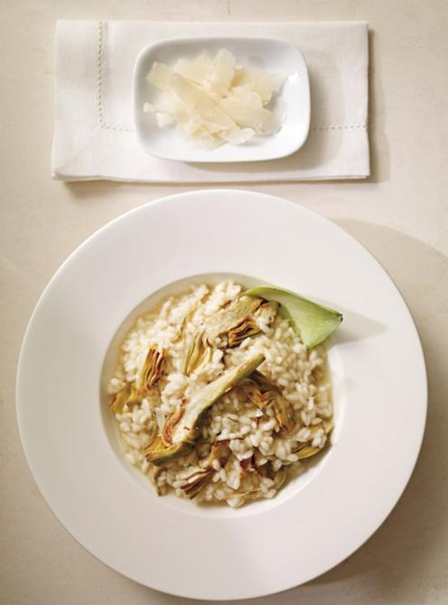

Risotto

Description
Risotto is an Italian rice dish cooked with broth until it reaches a
creamy consistency. The broth can be derived from meat, fish, or
vegetables. Many types of risotto contain butter, onion, white wine, and
Parmigiano-Reggiano cheese. It is one of the most common ways of cooking
rice in Italy.
Ingredients
- 1 onion, finely chopped
- 60 ml butter
- 500 ml arborio rice
- 250 ml white wine
- 1.5 to 2 litres warm chicken broth
- 250 ml grated Parmigiano-Reggiano cheese
Steps
-
In a large saucepan over medium heat, soften the onion in half the
butter. Add the rice and cook for 1 minute, stirring to coat well. Add
the white wine and reduce until almost dry.
-
Add the broth, about 250 ml (1 cup) at a time, stirring frequently until
the liquid is completely absorbed before adding more broth. Season with
salt and pepper. Cook for 18 to 22 minutes or until the rice is al
dente. Add broth, as needed.
-
Take off the heat and add the cheese, the remaining butter and the
toppings of your choice (sautéed artichokes, peas, asparagus, shrimp,
etc.). Stir until the texture is very creamy. Adjust the seasoning.
-
Divide the risotto into bowls. Sprinkle with a little Parmesan cheese,
if desired.